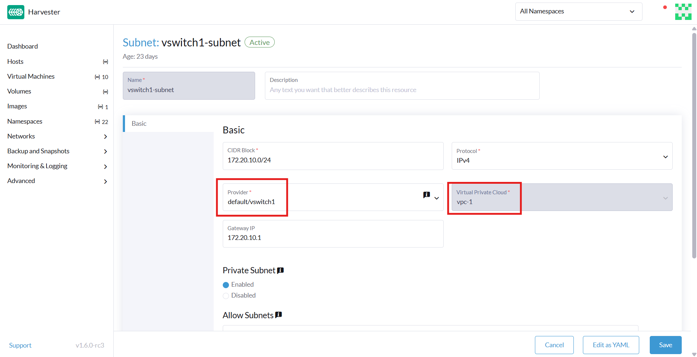

|
Dieses Dokument wurde mithilfe automatisierter maschineller Übersetzungstechnologie übersetzt. Wir bemühen uns um korrekte Übersetzungen, übernehmen jedoch keine Gewähr für die Vollständigkeit, Richtigkeit oder Zuverlässigkeit der übersetzten Inhalte. Im Falle von Abweichungen ist die englische Originalversion maßgebend und stellt den verbindlichen Text dar. |
Private Cloud
|
Alle Funktionen, die Kube-OVN verwenden, gelten als experimentell. Für weitere Informationen zu experimentellen Funktionen siehe Funktionsbezeichnungen. |
Eine Private Cloud (VPC) ist ein logisch isoliertes Netzwerk, das vollständige Kontrolle über IP-Adressen, Subnetze, Routentabellen, Firewalls und Gateways innerhalb einer Cloud-Infrastruktur bietet. VPCs ermöglichen die sichere und skalierbare Bereitstellung von virtualisierten Ressourcen wie Rechenleistung, Speicher und Containerdiensten.
Die folgende Tabelle skizziert die wichtigsten Komponenten eines VPC:
| Komponente | Beschreibung |
|---|---|
VPC |
Netzwerkraum auf oberster Ebene mit einem benutzerdefinierten IP-CIDR-Bereich |
subnet |
Unterteilung des VPC-IP-Raums; kann öffentlich oder privat sein |
Routentabelle |
Definiert Verkehrsregelungen innerhalb und außerhalb des VPC |
Internet-Gateway |
Ermöglicht den ausgehenden Internetzugang für öffentliche Subnetze |
NAT-Gateway |
Ermöglicht privaten Subnetzen den Zugang zum Internet (nur ausgehend) |
Sicherheitsgruppe |
Virtuelle Firewall, die den ein- und ausgehenden Verkehr pro Instanz steuert |
VPC-Peering |
Optionale Peering- oder Hybridverbindungen zwischen verschiedenen VPCs oder lokalen Netzwerken |
SUSE Virtualization und Kube-OVN-Integrationsarchitektur
Das folgende Diagramm veranschaulicht, wie VPCs, Subnetze, Overlay-Netzwerke und virtuelle Maschinen in SUSE Virtualization mit Kube-OVN logisch verbunden sind. Diese Architektur umfasst öffentliche und private Subnetze, die eine Trennung des internetgerichteten Verkehrs von internen Ressourcen ermöglichen. Darüber hinaus ermöglicht diese Architektur skalierbare, isolierte L3- und L2-Netzwerkstrukturen über den Cluster.
[ VPC: vpc-1 ]
│
┌─────────────────────┴─────────────────────┐
│ │
[ Subnet: vswitch1-subnet ] [ Subnet: vswitch2-subnet ]
CIDR: 172.20.10.0/24 CIDR: 172.20.20.0/24
Gateway: 172.20.10.1 Gateway: 172.20.20.1
│ │
[ Overlay Network: vswitch1 ] [ Overlay Network: vswitch2 ]
│ │
┌────────┴────────┐ ┌────────┴────────┐
│ │ │ │
[VM: vm1-vswitch1] [VM: vm2-vswitch1] [VM: vm1-vswitch2]
IP: 172.20.10.X IP: 172.20.10.Y IP: 172.20.20.Z
| Komponente | Plattform | Logische Verantwortung |
|---|---|---|
Kube-OVN |
Oberste L3-Domain, verwaltet Subnetzgruppen |
|
Kube-OVN |
CIDR-Zuweisung, Routing, Gateway, Firewall-Regeln |
|
SUSE Virtualization |
L2 virtueller Switch (OVS-Brücke), zugeordnet zu einem Subnetz |
|
SUSE Virtualization |
Führt Rechenlasten aus, die mit dem Overlay-Netzwerk verbunden sind |
Diese Architektur weist die folgenden Hauptmerkmale auf:
-
Kube-OVN erstellt die VPC und ihre Subnetze.
Jedes Subnetz umfasst eine CIDR und eine Gateway-IP und bindet an ein Overlay-Netzwerk (als Anbieter). Kube-OVN erzwingt eine Eins-zu-eins-Zuordnung zwischen dem Subnetz und dem Overlay-Netzwerk, um mehrdeutiges Routing, Verkehrsüberschneidungen und Isolationsprobleme zu vermeiden.
-
SUSE Virtualization definiert die Overlay-Netzwerke.
Jedes Overlay-Netzwerk wird in Kube-OVN als Anbieter betrachtet. Wenn Sie ein Subnetz in der SUSE Virtualization UI erstellen, können Sie diese Overlay-Netzwerke in der Provider Liste (Typ:
OverlayNetwork) auf dem Bildschirm Subnetz:Erstellen auswählen. -
SUSE Virtualization stellt virtuelle Maschinen bereit, die mit einem Overlay-Netzwerk verbunden sind.
Jede virtuelle Maschine verwendet das Kube-OVN IPAM, um nach dem Booten eine IP-Adresse anzufordern. Die virtuelle Maschine erhält ihre IP-Adresse, das Gateway und die Routinginformationen vom zugehörigen Subnetz.
-
Kube-OVN verwaltet alle L3-Logik (Routing, NAT, VPC-Peering und Isolierung).
SUSE Virtualization konzentriert sich ausschließlich auf Rechenleistung und Netzwerkverbindungen. Die Durchsetzung von Netzwerkrichtlinien, private Subnetze und NAT-Egress wird von Kube-OVN verwaltet.
Diese Architektur bietet folgende Vorteile:
-
Klare Trennung der Verantwortlichkeiten: SUSE Virtualization kümmert sich um Virtualisierung; Kube-OVN kümmert sich um SDN
-
Skalierbarkeit: Neue VPCs, Subnetze und Peering erfordern keine Änderungen im Kernel von SUSE Virtualization.
-
Kubernetes-natives Networking: Kube-OVN integriert sich eng mit Kubernetes und unterstützt CRDs, Richtlinien usw.
-
Isolation und Einblick: Zentralisierte Kontrolle über IPs, ACLs und Routing durch Kube-OVN.
VPC- und Subnetzkonfiguration
VPC-Einstellungen
In SUSE Virtualization ist eine Private Cloud (VPC) ein logischer Netzwerkcontainer, der hilft, Subnetze und Verkehr zu verwalten und zu isolieren. Sie definiert Routing, NAT und Netzwerksegmentierung.
SUSE Virtualization bietet eine Standard-VPC namens ovn-cluster und zwei zugehörige Subnetze namens ovn-default und join für interne Kube-OVN-Operationen. Sie können zusätzliche VPCs erstellen, indem Sie auf Create auf dem Bildschirm Virtuelle Private Cloud klicken.

Beim Erstellen benutzerdefinierter VPCs müssen Sie die Konfiguration der Routen vornehmen, die den Verkehr und die Verbindungen steuern, die die Kommunikation zwischen den lokalen und den entfernten VPCs ermöglichen. Die folgende Tabelle skizziert die Einstellungen auf dem Bildschirm Details zur Private Cloud:
| Abschnitt | Einstellung | Beschreibung |
|---|---|---|
Allgemeine Informationen |
Name |
Name der VPC |
Allgemeine Informationen |
Beschreibung |
Beschreibung der VPC |
Statische Routen Tab |
CIDR |
Ziel-IP-Adressbereich für die Route (zum Beispiel, |
Statische Routen Tab |
Nächster Hop IP |
IP-Adresse, an die der Verkehr für das CIDR weitergeleitet werden soll (zum Beispiel, die Gateway- oder Router-IP-Adresse) |
VPC-Peerings Tab |
Lokale Verbindungs-IP |
IP-Adresse im lokalen VPC, die für die Peering-Verbindung verwendet werden soll |
VPC-Peerings Tab |
Remote VPC |
Ziel-Remote-VPC, die mit dem lokalen VPC verbunden ist |

Subnetz-Einstellungen
Jedes Subnetz definiert einen CIDR-Block und ein Gateway und ist einem SUSE Virtualization Overlay-Netzwerk (virtueller Switch) zugeordnet. Es enthält auch Steuerungen für NAT und Zugriffsregeln.
Beim Erstellen von Subnetzen müssen Sie Einstellungen konfigurieren, die für Ihren Anwendungsfall relevant sind. In den meisten Fällen können Sie einfach mit der Konfiguration des CIDR-Blocks, Gateways und Anbieters beginnen. Die folgende Tabelle skizziert die Einstellungen auf dem Subnetz Detailbildschirm:
| Abschnitt | Einstellung | Beschreibung |
|---|---|---|
Allgemeine Informationen |
Name |
Name des Subnetzes |
Allgemeine Informationen |
Beschreibung |
Beschreibung des Subnetzes |
Einfaches Beispiel |
CIDR-Block |
IP-Adressbereich, der dem Subnetz zugewiesen ist (zum Beispiel |
Basis Registerkarte |
Protokoll |
Netzwerkprotokollversion, die für dieses Subnetz verwendet wird (IPv4 oder IPv6) |
Basis Registerkarte |
Anbieter |
Overlay-Netzwerk (virtueller Switch), an das Subnetz gebunden ist |
Basis Registerkarte |
Private Cloud |
Private Cloud, zu der das Subnetz gehört |
Basis Registerkarte |
Gateway |
IP-Adresse, die als Standardgateway für virtuelle Maschinen im Subnetz fungiert |
Basis Registerkarte |
Privates Subnetz |
Einstellung, die den Zugriff auf das Subnetz einschränkt und die Isolation des Netzwerks gewährleistet |
Basis Registerkarte |
Subnetze erlauben |
CIDRs, die auf das Subnetz zugreifen dürfen, wenn Privates Subnetz aktiviert ist |
Basis Registerkarte |
IP-Adressen ausschließen |
Liste von IP-Adressen, die nicht automatisch virtuellen Maschinen zugewiesen werden sollten |

Jedes erstellte Subnetz hat eine Einstellung namens <<`natOutgoing` setting,natOutgoing>>, die die Netzwerkadressübersetzung (NAT) für den Verkehr aktiviert, der das Subnetz verlässt und zu Zielen außerhalb des VPC geht. Diese Einstellung ist standardmäßig deaktiviert. Um es zu aktivieren, müssen Sie die YAML-Konfiguration des Subnetzes bearbeiten und den Wert auf natOutgoing: true setzen.

Standardmäßig können Subnetze in verschiedenen VPCs nicht direkt kommunizieren. Um eine sichere und kontrollierte Kommunikation zwischen ihnen zu ermöglichen, müssen Sie eine VPC-Peering-Verbindung herstellen. Ohne es bleibt der Subnetverkehr in jedem VPC vollständig isoliert.
|
VPC-Peering-Verbindungen können nur zwischen benutzerdefinierten VPCs hergestellt werden. |

Erstellen einer Private Cloud
Führen Sie die folgenden Schritte aus, um eine Private Cloud zu erstellen und zu konfigurieren.
-
Aktivieren Sie kubeovn-operator.
Das kubeovn-operator-Add-On stellt Kube-OVN im SUSE Virtualization Cluster bereit.

-
Erstellen von Overlay-Netzwerken.
Sie müssen ein separates Overlay-Netzwerk für jedes Subnetz erstellen, das Sie planen zu erstellen.
-
Erstellen Sie eine Private Cloud.
-
Gehen Sie zu Netzwerke → Private Cloud und klicken Sie dann auf Erstellen.
-
Geben Sie auf dem Bildschirm Private Cloud:Erstellen einen eindeutigen Namen für die Private Cloud an.
-
Klicken Sie auf Erstellen.
-
-
Erstellen Sie Subnetze.
-
Gehen Sie zu Netzwerke → Private Cloud.
-
Suchen Sie die Private Cloud, die Sie erstellt haben, und klicken Sie dann auf Subnetz erstellen.
-
Konfigurieren Sie auf dem Bildschirm Subnetz:Erstellen die Einstellungen, die für Ihre Umgebung relevant sind.
Sie müssen jedes Subnetz mit einem dedizierten Overlay-Netzwerk verknüpfen. Im Feld Anbieter zeigt die SUSE Virtualization UI nur Overlay-Netzwerke an, die nicht mit anderen Subnetzen verknüpft sind, wodurch die Eins-zu-eins-Zuordnung automatisch durchgesetzt wird.
-
Klicken Sie auf Als YAML bearbeiten.
-
Fügen Sie unter
specenableDHCP: truehinzu.Dies stellt sicher, dass virtuelle Maschinen, die mit dem Subnetz verbunden sind, die richtigen Standardroutenoptionen erhalten können.
-
Klicken Sie auf Erstellen.
-
-
Erstellen Sie virtuelle Maschinen.
-
Konfigurieren Sie die Einstellungen, die für jede virtuelle Maschine relevant sind.
Im Tab Netzwerke müssen Sie das richtige Overlay-Netzwerk im Feld Netzwerk auswählen.
-
Klicken Sie auf Erstellen.
Die virtuelle Maschine erhält ihre IP-Adresse von dem Subnetz, mit dem sie verbunden ist.
-
Wählen Sie ⋮ → YAML bearbeiten aus.
-
Ändern Sie den Wert von
spec.domain.devices.interface.binding.nameinmanagedtap.Dies stellt sicher, dass die virtuelle Maschine die richtigen DHCP-Optionen vom Subnetz erhält, anstatt den Standard-DHCP-Server von KubeVirt zu verwenden.
Wenn Sie diesen Schritt nicht ausführen, hat die virtuelle Maschine keine Standardroute. Bis die Standardroute im Gastbetriebssystem ordnungsgemäß konfiguriert ist, werden Versuche, auf externe Ziele und virtuelle Maschinen in verschiedenen Subnetzen zuzugreifen, fehlschlagen.
Für weitere Informationen siehe Beschränkungen von Overlay-Netzwerken.
-
Starten Sie jede virtuelle Maschine neu.
-
Beispielkonfiguration und -überprüfung des VPC
-
Overlay-Netzwerke erstellen mit den folgenden Einstellungen:
-
Name:
vswitch1undvswitch2 -
Typ:
OverlayNetwork
-
-
Erstellen Sie ein VPC mit dem Namen
vpc-1. -
Erstellen Sie zwei Subnetze in
vpc-1mit den folgenden Einstellungen:Name CIDR Anbieter Gateway-IP vswitch1-subnet172.20.10.0/24default/vswitch1172.20.10.1vswitch2-subnet172.20.20.0/24default/vswitch2172.20.20.1 -
Erstellen Sie drei virtuelle Maschinen mit den folgenden Einstellungen:
-
Name:
vm1-vswitch1,vm2-vswitch1undvm1-vswitch2 -
Basis Registerkarte
-
CPU:
1 -
Arbeitsspeicher:
2
-
-
Volumes Registerkarte
-
Image Volume: Ein Cloud-Image (zum Beispiel
noble-server-cloudimg-amd64)
-
-
Netzwerke Registerkarte
-
Netzwerk:
default/vswitch1
-
-
Erweiterte Optionen Registerkarte
users: ` `- name: ubuntu ` `groups: [ sudo ] ` `shell: /bin/bash ` `sudo: ALL=(ALL) NOPASSWD:ALL ` `lock\_passwd: false
Sobald die virtuellen Maschinen ausgeführt werden, zeigt der Knoten den NTP-Server
0.suse.pool.ntp.orgund die IP-Adresse an.
-
-
Öffnen Sie die seriellen Konsolen von
vm1-vswitch1undvm1-vswitch2, und fügen Sie dann eine Standardroute auf jeder hinzu (falls keine vorhanden ist) mit den folgenden Befehlen:-
vm1-vswitch1(172.20.10.6):#sudo ip route add default via 172.20.10.1 dev enp1s0
-
vm1-vswitch2(172.20.20.3):#sudo ip route add default via 172.20.20.1 dev enp1s0
Wenn eine virtuelle Maschine Datenverkehr an ein unbekanntes Netzwerk (nicht im lokalen Subnetz) senden möchte, muss der Datenverkehr an die angegebene Gateway-IP weitergeleitet werden, die für das verbundene Subnetz konfiguriert ist, unter Verwendung der angegebenen Netzwerkschnittstelle. In diesem Beispiel muss
vm1-vswitch1den Datenverkehr über172.20.10.1weiterleiten, währendvm1-vswitch2den Datenverkehr über172.20.20.1weiterleiten muss. Beide virtuellen Maschinen verwenden die Netzwerkschnittstelleenp1s0.
-
-
Überprüfen Sie die Konnektivität mit dem
pingBefehl.-
Verwenden Sie
vm1-vswitch1(172.20.10.6), umvm1-vswitch2(172.20.20.3) anzupingen. -
Verwenden Sie
vm1-vswitch2(172.20.20.3), umvm1-vswitch1(172.20.10.6) anzupingen.Da
vm1-vswitch1undvm1-vswitch2im selben Subnetz sind, können sie ohne jegliche Standardrouten-Einstellungen miteinander kommunizieren.Wenn vor dem Ausführen des Ping-Befehls keine Standardroute auf der virtuellen Maschine existiert, zeigt die Konsole die Nachricht
ping: connect: an. Netzwerk nicht erreichbar.
-
Einstellung für privates Subnetz
Wenn die Einstellung Privates Subnetz in einem Subnetz aktiviert ist, kann es standardmäßig nicht mit anderen Subnetzen im selben VPC kommunizieren. Der Datenverkehr zwischen Subnetzen ist nur erlaubt, wenn Sie die CIDR-Blöcke der anderen Subnetze zur Erlaubte Subnetze-Liste des privaten Subnetzes hinzufügen.
Die Einstellung Privates Subnetz bietet folgende Vorteile:
-
Fein abgestufte Netzwerksegmentierung (Mikrosegmentierung)
-
Stärkere Netzwerkisolierung innerhalb des VPC und reduzierte potenzielle Angriffsfläche
-
Verhinderung unbefugten Zugriffs auf sensible oder kritische Ressourcen innerhalb des VPC
-
Kontrollierte, selektive Kommunikation zwischen Subnetzen über die Erlaubte Subnetze-Liste
Beispiel zur Überprüfung des privaten Subnetzes
-
Gehen Sie zu Netzwerke → Virtuelle Private Cloud.
-
Suchen Sie
vswitch1-subnetund wählen Sie dann ⋮ → Konfiguration bearbeiten aus. -
Aktivieren Sie die Einstellung Privates Subnetz.
-
Öffnen Sie die serielle Konsole von
vm1-vswitch1(172.20.10.6) und pingen Sie dannvm1-vswitch2(172.20.20.3).Der Ping-Versuch schlägt fehl, da
vm1-vswitch1isoliert ist. Die Aktivierung der Einstellung Privates Subnetz aufvswitch1-subnetverbietetvm1-vswitch1die Kommunikation mit virtuellen Maschinen in anderen Subnetzen. -
Gehen Sie zurück zum Bildschirm Virtual Private Cloud, suchen Sie
vswitch1-subnetund wählen Sie dann ⋮ → Konfiguration bearbeiten aus. -
Fügen Sie
172.20.20.0/24zum Feld Erlaubte Subnetze hinzu. -
Öffnen Sie die serielle Konsole von
vm1-vswitch1(172.20.10.6) und pingen Sie dannvm1-vswitch2(172.20.20.3).Der Ping-Versuch war erfolgreich.
natOutgoing Einstellung
Die natOutgoing Einstellung aktiviert die Netzwerkadressübersetzung (NAT) für den Datenverkehr, der das Subnetz verlässt und zu Zielen außerhalb der VPC geht. Diese Einstellung ist standardmäßig deaktiviert. Um es zu aktivieren, müssen Sie die YAML-Konfiguration des Subnetzes bearbeiten und den Wert auf natOutgoing: true setzen.
Beispielkonfiguration und -überprüfung für natOutgoing
-
Erstellen Sie ein Overlay-Netzwerk mit den folgenden Einstellungen:
-
Name:
vswitch-external -
Typ:
OverlayNetwork
-
-
Im
ovn-clusterVPC erstellen Sie ein Subnetz mit den folgenden Einstellungen:-
Name:
external-subnet -
CIDR-Block:
172.20.30.0/24 -
Provider:
default/vswitch-external -
Gateway-IP:
172.20.30.1
-
-
Erstellen Sie eine virtuelle Maschine mit den folgenden Einstellungen:
-
Name:
vm-external -
Basis Registerkarte
-
CPU:
1 -
Arbeitsspeicher:
2
-
-
Volumes Registerkarte
-
Image Volume: Ein Cloud-Image (zum Beispiel
noble-server-cloudimg-amd64)
-
-
Netzwerke Registerkarte
-
Netzwerk:
default/vswitch-external
-
-
Erweiterte Optionen Registerkarte
users: ` `- name: ubuntu ` `groups: [ sudo ] ` `shell: /bin/bash ` `sudo: ALL=(ALL) NOPASSWD:ALL ` `lock\_passwd: false
-
-
Öffnen Sie die serielle Konsole von
vm-external(172.20.30.2), und pingen Sie dann8.8.8.8.Die Konsole zeigt die Nachricht
ping: connect: Netzwerk nicht erreichbar. -
Fügen Sie eine Standardroute mit dem folgenden Befehl hinzu:
#sudo ip route add default via 172.20.30.1 dev enp1s0
Erneut schlägt der Ping-Versuch fehl.
-
Gehen Sie zum Bildschirm Virtual Private Cloud.
-
Suchen Sie
external-subnetund wählen Sie dann ⋮ → Konfiguration bearbeiten aus. -
Klicken Sie auf Als YAML bearbeiten.
-
Suchen Sie das Feld
natOutgoingund ändern Sie den Wert intrue. -
Klicken Sie auf Speichern.
-
Öffnen Sie die serielle Konsole von
vm-external(172.20.30.2), und pingen Sie dann8.8.8.8.Der Ping-Versuch war erfolgreich.
VPC-Peering
VPC-Peering ist eine Netzwerkverbindung, die es virtuellen Maschinen in verschiedenen VPCs ermöglicht, über private IP-Adressen zu kommunizieren.
Jede VPC ist ein separater Namespace mit einem eigenen CIDR-Block, einer Routingtabelle und einer Isolationsgrenze. Ohne VPC-Peering sind virtuelle Maschinen isoliert, selbst wenn sie innerhalb desselben SUSE Virtualization Clusters gehostet werden. Sobald eine Peering-Verbindung hergestellt ist, werden die Routingregeln automatisch aktualisiert, um den virtuellen Maschinen die private Kommunikation zu ermöglichen.
VPC-Peering bietet folgende Vorteile:
-
Die VPCs bleiben logisch und administrativ isoliert. Dies ist ideal für Multi-Tenant-Setups, die eine starke Netzwerkisolierung mit optionaler Konnektivität erfordern. Sie können Arbeitslasten nach Team, Funktion oder Umgebung organisieren (zum Beispiel Entwicklung vs. Produktion).
-
Der Datenverkehr zwischen VPCs durchquert nicht das öffentliche Internet, was die Exposition verringert. Sie können auch Routingtabellen und Firewall-Regeln verwenden, um den Netzwerkzugang streng zu kontrollieren.
-
Die Beibehaltung des Datenverkehrs innerhalb des internen Cloud-Netzwerks verbessert nicht nur die Leistung, sondern senkt auch die Kosten, was einen erheblichen Vorteil gegenüber der Nutzung des öffentlichen Internets oder von VPNs bietet.
Das folgende Diagramm zeigt, wie VPCs und Subnetze in Kube-OVN auf Overlay-Netzwerke und virtuelle Maschinen in SUSE Virtualization abgebildet werden. Diese Architektur ermöglicht es Ihnen, skalierbare und isolierte L3- und L2-Netzwerkstrukturen über das Cluster hinweg zu erstellen.
┌───────────────────────────────────────────┐
│ Kube-OVN │
│ (SDN Controller / IPAM) │
└───────────────────────────────────────────┘
│
┌──────────────────────────────────────────────────────┴──────────────────────────────────────────────────────────┐
│ │ │
┌──────────────┐ ┌──────────────┐ ┌──────────────┐
│ VPC: vpc-1 │ │VPC: vpcpeer-1│ ◀────────── peering ──────────▶ │VPC: vpcpeer-2│
└──────────────┘ └──────────────┘ └──────────────┘
│ │ │
▼ ▼ ▼
┌──────────────────────────────┐ ┌──────────────────────────────┐ ┌──────────────────────────────┐
│ Subnet: vswitch1-subnet │ │ Subnet: vswitch3-subnet │ │ Subnet: vswitch4-subnet │
│ CIDR: 172.20.10.0/24 │ │ CIDR: 10.0.0.0/24 │ │ CIDR: 20.0.0.0/24 │
│ Gateway: 172.20.10.1 │ │ Gateway: 10.0.0.1 │ │ Gateway: 20.0.0.1 │
└──────────────────────────────┘ └──────────────────────────────┘ └──────────────────────────────┘
│ (1:1 mapping - Provider binding) │ │
▼ ▼ ▼
┌──────────────────────────────┐ ┌──────────────────────────────┐ ┌──────────────────────────────┐
│ Overlay: vswitch1 │ │ Overlay: vswitch3 │ │ Overlay: vswitch4 │
│ Type: OverlayNetwork │ │ Type: OverlayNetwork │ │ Type: OverlayNetwork │
└──────────────────────────────┘ └──────────────────────────────┘ └──────────────────────────────┘
│ │ │
▼ ▼ ▼
┌──────────────────────┐ ┌──────────────────────┐ ┌──────────────────────┐
│ VM: vm1-vswitch1 │ │ VM: vm1-vswitch3 │ │ VM: vm1-vswitch4 │
│ IP: 172.20.10.5 │ ◀ ──────── X ──────── ▶ │ IP: 10.0.0.2 │ ◀── Connected via ──▶ │ IP: 20.0.0.2 │
└──────────────────────┘ └──────────────────────┘ vswitch (overlay) └──────────────────────┘
▲
│
VM launched and managed by {harvester-product-name}
Beispiele für VPC-Peering-Konfigurationen
-
Beispiel 1: Erfolgreiche Kommunikation über VPCs hinweg
VPC Name VPC CIDR Teilnetz Statische Route vpcpeer-110.0.0.0/1610.0.0.0/2420.0.0.0/16 → 169.254.0.2vpcpeer-220.0.0.0/1620.0.0.0/2410.0.0.0/16 → 169.254.0.1Da beide Subnetze innerhalb ihrer jeweiligen VPC-CIDRs liegen, funktioniert das Routing korrekt und die Kommunikation über VPCs hinweg ist erfolgreich.
-
Beispiel 2: Nicht erfolgreiche Kommunikation über VPCs hinweg aufgrund eines Routingkonfigurationsproblems.
VPC Name VPC CIDR Teilnetz Statische Route vpcpeer-110.0.0.0/1610.1.0.0/2420.0.0.0/16 → 169.254.0.2vpcpeer-220.0.0.0/1620.1.0.0/2410.0.0.0/16 → 169.254.0.1Die Ziel-Subnetz-IP-Adressen (zum Beispiel
10.1.0.2und20.1.0.2) sind nicht abgedeckt durch die Routing-Konfiguration, wodurch die Kommunikation zwischen VPCs fehlschlägt.
|
Sie müssen Folgendes sicher stellen:
Wenn ein Subnetz einen spezifischen Bereich verwendet, der nicht von der VPC-CIDR abgedeckt ist, kann die zugehörige statische Route dieses Subnetz nicht erreichen. |
Für weitere Informationen zu den Voraussetzungen und der Konfiguration von VPC-Peering siehe VPC Peering in der Kube-OVN-Dokumentation.
Beispiel für VPC-Peering-Konfiguration und -Überprüfung
-
Erstellen Sie zwei Overlay-Netzwerke mit den folgenden Einstellungen:
-
Name:
vswitch3undvswitch4 -
Typ:
OverlayNetwork
-
-
Erstellen Sie zwei VPCs mit den Namen
vpcpeer-1undvpcpeer-2.SUSE Virtualization erstellt zwei isolierte Netzwerkbereiche, die bereit für die Erstellung von Subnetzen sind.
-
Erstellen Sie ein Subnetz in jeder VPC mit den folgenden Einstellungen:
VPC Name Subnetzname CIDR-Block Anbieter Gateway-IP vpcpeer-1subnet110.0.0.0/24default/vswitch310.0.0.1vpcpeer-2subnet220.0.0.0/24default/vswitch420.0.0.1 -
Bearbeiten Sie die Konfiguration beider VPCs.
-
vpcpeer-1Abschnitt Einstellung Wert VPC Peering Tab
Lokale Verbindungs-IP
169.254.0.1/30VPC Peering Tab
Remote VPC
vpcpeer-2Statische Routen Tab
CIDR
20.0.0.0/16Statische Routen Tab
Nächster Hop IP
169.254.0.2 -
vpcpeer-2Abschnitt Einstellung Wert VPC Peering Tab
Lokale Verbindungs-IP
169.254.0.2/30VPC Peering Tab
Remote VPC
vpcpeer-1Statische Routen Tab
CIDR
10.0.0.0/16Statische Routen Tab
Nächster Hop-IP
169.254.0.1
-
-
Erstellen Sie virtuelle Maschinen.
Ein
UnschedulableFehler weist typischerweise auf unzureichenden Speicher hin. Beenden Sie andere virtuelle Maschinen, bevor Sie versuchen, neue zu erstellen. -
Öffnen Sie die seriellen Konsolen von
vm1-vpcpeer1undvm1-vpcpeer2, und fügen Sie dann eine Standardroute auf jeder hinzu (falls keine vorhanden ist) mit den folgenden Befehlen:-
vm1-vpcpeer1(10.0.0.2)#sudo ip route add default via 10.0.0.1 dev enp1s0
-
vm1-vpcpeer2(20.0.0.2)#sudo ip route add default via 20.0.0.1 dev enp1s0
-
-
Testen Sie die Kommunikation zwischen VPCs mit dem
pingBefehl.-
Verwenden Sie
vm1-vpcpeer1(10.0.0.2), umvm1-vpcpeer2(20.0.0.2) anzupingen. -
Verwenden Sie
vm1-vpcpeer2(20.0.0.2), umvm1-vpcpeer1(10.0.0.2) anzupingen.Die Kommunikation zwischen virtuellen Maschinen in verschiedenen VPCs basiert auf statischen Routen, die definieren, wie der Datenverkehr zur entfernten VPC weitergeleitet wird. Damit diese Routen korrekt funktionieren, muss das Ziel-CIDR der statischen Route im Haupt-CIDR-Bereich der entfernten VPC liegen.
-
Konfiguration der lokalen Connect-IP und CIDR
| Frage | Antwort |
|---|---|
Ist der Wert Local Connect IP ein CIDR-Block? |
Ja (zum Beispiel |
Was ist die empfohlene Subnetzgröße? |
|
Können private Adressen (RFC 1918) für Peering-Links verwendet werden? |
Nicht empfohlen |
Warum |
Link-lokal, sicher, nicht internet-routbar, weit verbreitet |
-
Frage: Ist der Wert Local Connect IP ein CIDR-Block?
Antwort: Ja. Sie müssen einen CIDR-Block angeben (zum Beispiel
169.254.0.1/30) anstelle einer einzelnen IP-Adresse. Der CIDR definiert ein punkt-zu-punkt-Netzwerk, in dem eine IP-Adresse von der lokalen VPC und die andere von der entfernten VPC verwendet wird.Beispiel:
/30Block (169.254.0.0/30)IP-Adresse Beschreibung 169.254.0.0
Netzwerkadresse
169.254.0.1
Verwendet von VPC A
169.254.0.2
Verwendet von VPC B
169.254.0.3
Broadcast (optional)
-
Frage: Was ist die empfohlene Subnetzgröße?
Antwort:
/30bietet genau zwei verwendbare IP-Adressen, was die Anforderung für das Punkt-zu-Punkt-VPC-Peering erfüllt. Die Verwendung größerer Blöcke (zum Beispiel/28und/29) ist nicht notwendig und kann sogar als verschwenderisch angesehen werden.CIDR Verwendbare IPs Empfohlen? /302
Ja
/296
Nein
/2814
Nein
-
Frage: Warum
169.254.x.x/30anstelle von privaten Adressen verwenden?Antwort:
169.254.0.0/16ist nicht Teil des RFC 1918 privaten Adressraums (10.0.0.0/8,172.16.0.0/12und192.168.0.0/16). RFC 3927 definiert169.254.0.0/16als den link-lokalen Adressraum, der für interne Kommunikation, automatische IP-Konfiguration und Punkt-zu-Punkt-Routing vorgesehen ist.169.254.x.x/30hat folgende Vorteile:-
Nicht routbar zum öffentlichen Internet.
-
Sicher für die interne Nutzung.
-
Wird häufig von Cloud-Plattformen (einschließlich AWS und Alibaba Cloud) für interne Netzwerkzwecke wie VPC-Peering und den Zugriff auf Metadaten verwendet.
-